UDN
Search public documentation:
FBXSkeletalMeshPipelineJP
English Translation
中国翻译
한국어
Interested in the Unreal Engine?
Visit the Unreal Technology site.
Looking for jobs and company info?
Check out the Epic games site.
Questions about support via UDN?
Contact the UDN Staff
中国翻译
한국어
Interested in the Unreal Engine?
Visit the Unreal Technology site.
Looking for jobs and company info?
Check out the Epic games site.
Questions about support via UDN?
Contact the UDN Staff
FBX 骨格メッシュ パイプライン
概要
- テクスチャを含むマテリアルをともなった静的メッシュ
- アニメーション
- モーフターゲット
- マルチ UV セット
- スムージンググループ
- 頂点カラー
- LOD
一般的なセットアップ
単一のメッシュと複数パーツのメッシュ
骨格メッシュは、切れ目のない単一のメッシュで構成するか、または、同一の骨格にすべてスキニングされた複数の独立したメッシュで構成することが可能です。 複数のメッシュを使用すると、LOD をそれぞれ独立して処理することができるとともに、モジュラー キャラクター システムで使用するために各部分を独立してエクスポートすることができます。このようなやり方で骨格メッシュを作成してもパフォーマンスに負荷はかかりません。個々のパーツは、「Unreal」エディタにインポートされるとすべて統合されます。
複数のメッシュを使用すると、LOD をそれぞれ独立して処理することができるとともに、モジュラー キャラクター システムで使用するために各部分を独立してエクスポートすることができます。このようなやり方で骨格メッシュを作成してもパフォーマンスに負荷はかかりません。個々のパーツは、「Unreal」エディタにインポートされるとすべて統合されます。
リグ構築
リグ構築とは、メッシュをボーン / ジョイント (関節) の骨格階層にバインディングする (結びつける) ことを言います。これによって、基礎となる骨格のボーン / ジョイントが、メッシュの頂点に影響を与え、動くとメッシュを変形させることができるようになります。骨格
骨格を作成する方法は、ユーザーの好みと使用する 3D アプリケーションに応じてさまざまあります。 3dsMax 3dsMax でどのように骨格階層を作成するかは、ユーザー次第です。標準的な Bones Tools (ボーン ツール) を使用しても充分機能します。あるいは、オブジェクトの階層を独自に作成して、完全にカスタマイズしたジオメトリと制御を実現することもできます。とにかく、いろいろな方法があるため、ゲームキャラクターのためにアニメーション リグを作成する方法について解説しているチュートリアルは、多数出回っています。3dsMax のヘルプを参照しても、このツールがどのように機能するかについて詳細に知ることができます。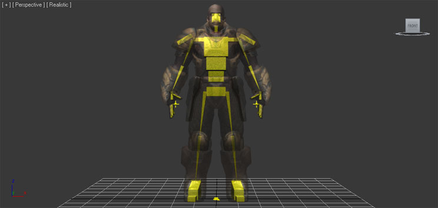
Maya Maya を使用する場合、 Joint Tool (ジョイント ツール) を利用すると、骨格メッシュのための骨格を作成することができます。Maya でこのツールを利用してリグを作成する方法についても、やはり極めて多数のチュートリアルが出回っています。Maya のヘルプからも、このことに関する役立つ情報を得ることができます。
バインディング
メッシュを骨格にバインディングするプロセスは、使用する 3D アプリケーションによって異なります。 3dsMax 3dsMax では、 Skin モディファイアを使用してメッシュ (複数も) をバインディングしなければなりません。このプロセスは、骨格メッシュが単一の完結したメッシュで構成されているか、複数のメッシュ パーツから構成されているかにかかわらず同一です。- バインディングするメッシュを選択します。

- Modifier List (モディファイア リスト) から Skin モディファイアを追加します。
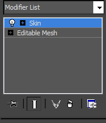
- Skin モディファイアのパラメータ欄で、
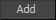
ボタンをクリックして、メッシュに影響を与えるボーンを追加します。[ Select Bones ] (ボーンの選択) ウインドウが開きます。

- [ Select Bones ] ウインドウからボーン (複数も) を選択し、
ボタンを押してボーンを追加します。
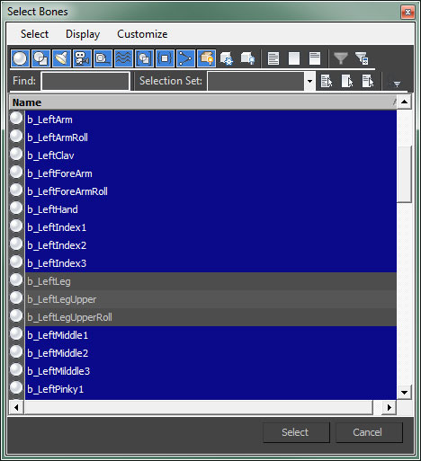
- モディファイアの Bones (ボーン) リストにボーンが表示されます。
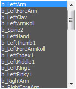
- これで、各ボーンのためのメッシュの頂点がもつ重みを調整することによって、どの頂点がどのボーンによってどの程度影響を受けるかを決めることができるようになりました。これにはエンベロープを使用して、直接頂点のための重みを入力するか、他の好みの方法を用いることができます。

- バインディングするメッシュ (複数可) を選択します。
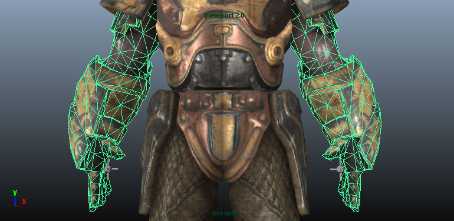
- Shift キーを押しながら骨格のルートジョイントを選択します。
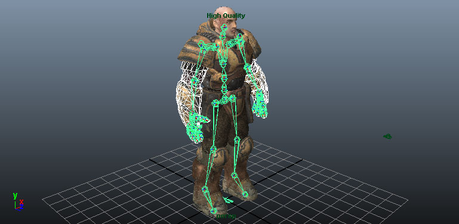
- Skin > Bind Skin メニューから Smooth Bind を選択します。

- これで、各ジョイントのためのメッシュの頂点がもつ重みを調整することによって、どの頂点がどのボーンによってどの程度影響を受けるかを決めることができるようになりました。これには Paint Skin Wieghts Tool (スキン重み付けペイント ツール) を使用するか、他の好みの方法を用いることができます。
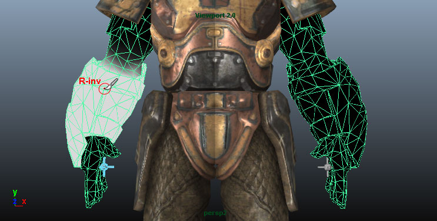
回転軸
「Unreal Engine」におけるメッシュの回転軸は、あらゆる変形 (平行移動、回転、スケーリング) が実行される際の中心点を決定します。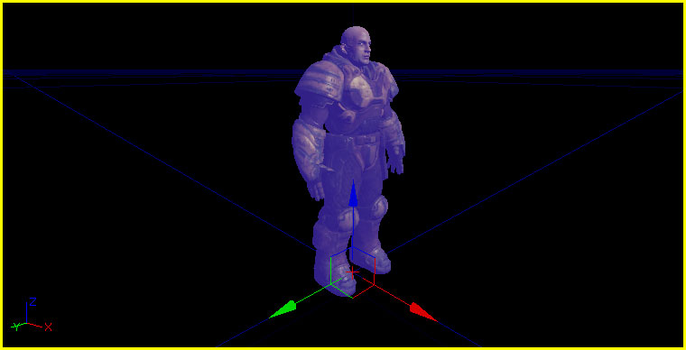
骨格メッシュの回転軸はつねに骨格のルートボーン / ジョイントに位置します。したがって、骨格のルートがシーン内のどこに位置しているかは問題になりません。3D モデリング アプリケーションからエクスポートされると、原点 (0,0,0) に位置しているかのようになります。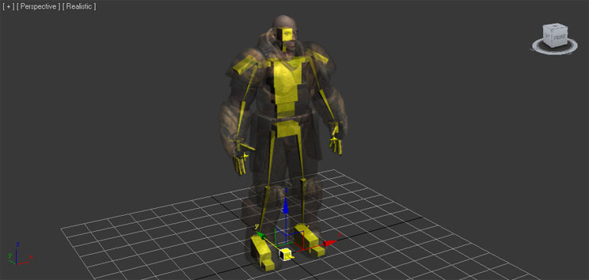
三角分割
「Unreal Engine」においてメッシュは、三角分割されなければなりません。これは、グラフィックスのハードウェアがトライアングルしか扱わないためです。 メッシュを確実に三角分割する方法はいくつかあります。
メッシュを確実に三角分割する方法はいくつかあります。
- トライアングルのみを使用してメッシュをモデリングする - これは、仕上がりを最も良く制御できるため、最善の方法です。
- 3D アプリケーションでメッシュを三角分割する - エクスポートする前にクリーンアップおよび変形できるため良い方法です。
- FBX のエクスポーターがメッシュを三角分割できるようにする - クリーンアップはできませんが単純なメッシュには機能するため、悪くはない方法と言えます。
- インポーターがメッシュを三角分割できるようにする - クリーンアップはできませんが単純なメッシュには機能するため、悪くはない方法です。

法線マップの作成
メッシュのための法線マップは、たいていのモデリング アプリケーションの内部で直接作成することができます。そのためには、低解像度のレンダリング メッシュと高解像度の詳細メッシュを作成します。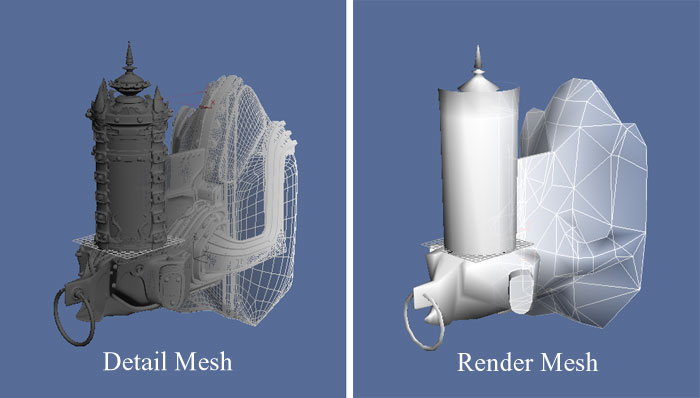
高解像度の詳細メッシュのジオメトリは、法線マップのための法線を生成するために使用します。法線マップ作成のための正確なプロセスに関する詳細については、ご使用のソフトウェアのドキュメンテーションをご覧ください。マテリアル
外部アプリケーションでモデリングされたメッシュに適用されるマテリアルは、メッシュとともにエクスポートされて、「Unreal」エディタの中にインポートされます。これによって、プロセスは簡略化されます。テクスチャを別個に「Unreal」エディタにインポートする必要がなく、マテリアルを作成したり適用したりする必要もありません。FBX パイプラインを使用すると、インポート プロセスによってこれらの動作すべてが実行可能となります。 また、これらのマテリアルは特殊な方法でセットアップする必要があります。特に、メッシュが複数のマテリアルをもつ場合や、メッシュ上でマテリアルの順序が重要となる場合にその必要が生じます。(マテリアルの順序が重要となる場合には、マテリアル 0 を胴体にして、マテリアル 1 を頭部にしなければならないキャラクター モデルの場合などがあります)。 エクスポートのためにマテリアルをセットアップする場合の詳細については、 FBX マテリアル パイプライン のページを参照してください。頂点カラー
骨格メッシュのための頂点カラー (1 セットのみ) を、FBX パイプラインを使用して転送することができます。特別な設定は必要ありません。
3D アプリケーションからメッシュをエクスポートする
- ビューポートでエクスポートすべきメッシュ (複数可) とボーンを選択します。

- [ File ] (ファイル) メッシュから、 Export Selected (選択してエクスポート) を選びます。(選択に無関係にシーン内のすべてをエクスポートする必要がある場合は Export All (すべてエクスポート) を選びます)。

- メッシュ (複数可) をエクスポートする FBX ファイルの位置と名前を選択し、
 ボタンをクリックします。
ボタンをクリックします。
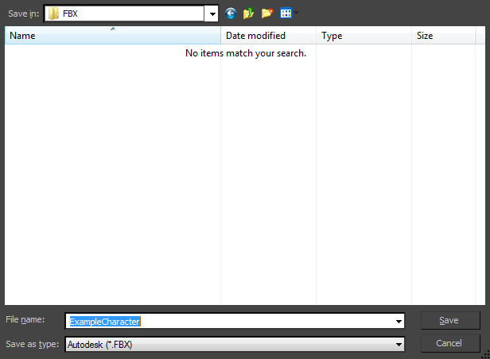
- [ FBX Export ] (FBX エクスポート) ダイアログボックスで、適切なオプションをセットし、
 ボタンをクリックして、メッシュ (複数可) を含む FBX ファイルを作成します。
ボタンをクリックして、メッシュ (複数可) を含む FBX ファイルを作成します。

- ビューポートでエクスポートすべきメッシュ (複数可) とジョイントを選択します。

- [ File ] (ファイル) メッシュから、 Export Selection (選択してエクスポート) を選びます。(選択に無関係にシーン内のすべてをエクスポートする必要がある場合は Export All (すべてエクスポート) を選びます)。

- メッシュ (複数可) をエクスポートする FBX ファイルの位置と名前を選択するとともに、[ FBX Export ] (FBX エクスポート) ダイアログボックスで適切なオプションをセットし、さらに、
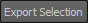
ボタンをクリックして、メッシュ (複数可) を含む FBX ファイルを作成します。
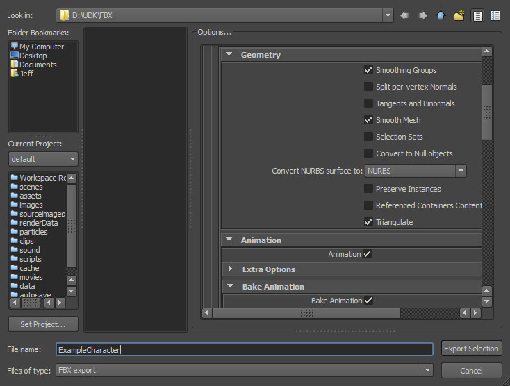
メッシュのインポート
- コンテンツ ブラウザの中で
 ボタンをクリックします。開いているファイル ブラウザで、インポートすべき FBX ファイルに進み、それを選択します。 注意 : ドロップダウン リストから を選択することによって、不要なファイルを除去しなければならない場合があります。
ボタンをクリックします。開いているファイル ブラウザで、インポートすべき FBX ファイルに進み、それを選択します。 注意 : ドロップダウン リストから を選択することによって、不要なファイルを除去しなければならない場合があります。

- [ Import ] ( インポート ) ダイアログ ボックスから適切な設定値を選択します。大抵の場合、デフォルト値で充分です。全設定値の詳細については、 FBX インポート ダイアログ のセクションを参照してください。

-
 ボタンをクリックしてメッシュ (複数) をインポートします。プロセスが成功すると、その結果として得られたメッシュ、マテリアル (複数も)、テクスチャ (複数も) がコンテンツ ブラウザ内に表示されます。
ボタンをクリックしてメッシュ (複数) をインポートします。プロセスが成功すると、その結果として得られたメッシュ、マテリアル (複数も)、テクスチャ (複数も) がコンテンツ ブラウザ内に表示されます。
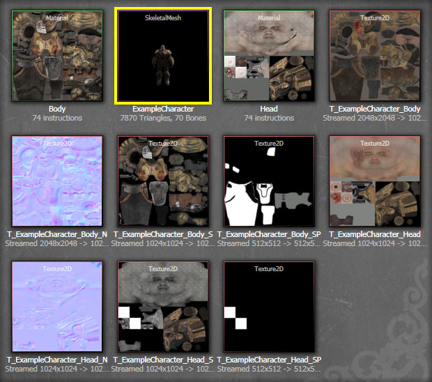
AnimSet エディタ内でインポートされたメッシュを表示することによって、プロセスが期待したとおりに実行されたか否かを判断することができるようになります。利用可能なアニメーションをすでにインポートしている場合は、それから 1 つ選択して再生することによって、メッシュが正しくインポートされたことを確かめることができます。
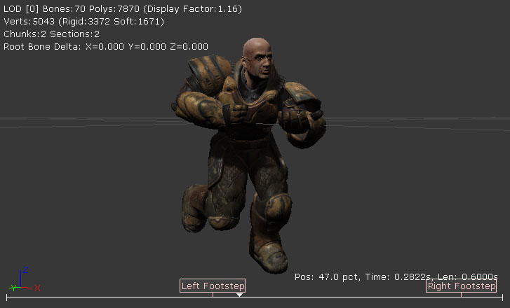
骨格メッシュの LOD
LOD のセットアップ
全般 通常、LOD を扱うには、完全な詳細度をもつベースメッシュから最も低い詳細度をもつ LOD メッシュまで、さまざまな複雑度のモデルを作成します。これらのモデルはすべて一列に並び、同一の回転軸をもつ同一の空間を占めなければなりません。また、同一の骨格にスキニングされる必要があります。また、3D アプリケーション内にある複数の独立したメッシュを使用して、骨格メッシュを作ることが可能です。これらのパーツそれぞれは、他のメッシュとは別の LOD をもつことができます。したがって、各種 LOD における単純なバージョンを使用するパーツもあれば、高詳細バージョンを使用し続けるパーツもあるということになります。各 LOD メッシュでは、完全に異なるマテリアルを割り当てることができます。(マテリアルの量も変えることができます)。したがって、ベースメッシュでは複数のマテリアルを使用して、カメラの近くにおいて望ましい詳細度を実現し、低い詳細度のメッシュでは、あまり目立たないため単一のマテリアルを使用することができます。 3dsMax- メッシュをすべて (ベースと LOD - 順番は重要ではありません) 選択して、[ Group ] (グループ) メニューから Group コマンドを選択します。

- ダイアログボックスが開くので、新たなグループの名前を入力し、
 ボタンをクリックしてグループを作成します。
ボタンをクリックしてグループを作成します。

-
 ボタンをクリックして、[ Utilities ] (ユーティリティ) パネルを表示し、 Level of Detail (LOD) ユーティリティを選択します。 *注意 : *
ボタンをクリックして、[ Utilities ] (ユーティリティ) パネルを表示し、 Level of Detail (LOD) ユーティリティを選択します。 *注意 : *  をクリックして、リストから選択しなければならない場合があります。
をクリックして、リストから選択しなければならない場合があります。

- グループが選択されたら、
 ボタンをクリックして、新たな LOD セットを作成し、選択されたグループ内にあるメッシュをそれに追加します。メッシュは、その複雑度に応じて自動的に序列化します。
ボタンをクリックして、新たな LOD セットを作成し、選択されたグループ内にあるメッシュをそれに追加します。メッシュは、その複雑度に応じて自動的に序列化します。

- ベースとなる LOD から最後の LOD まで、順番にメッシュをすべて (ベースと LOD) 選択します。これは重要であるため、複雑度に応じて正しい順序で追加します。さらに、[ Edit ] (編集) メニューから、 Level of Detail > Group コマンドを選択します。

- これで、すべてのメッシュが LOD グループのもとにグループ化されているはずです。
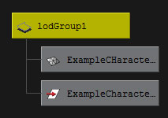
マルチパーツ LOD
マルチパーツ骨格メッシュのために LOD を設定するには、フルのメッシュのために LOD を設定する場合と同じ方法をとります。ただし、LOD を有する各パーツのために、LOD グループが作成されることになります。これら個々の LOD グループを設定するプロセスは、上記で概観したプロセスと同じです。LOD のエクスポート
骨格メッシュの LOD をエクスポートするには、次のようにします。 3dsMax- エクスポートすべき LOD セットとボーンを含むメッシュのグループ (複数可) を選択します。
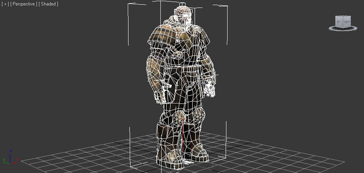
- ベースメッシュのために使用したエクスポート手順と同じ手順に従います。(上記 メッシュのエクスポート のセクションで解説されています)。
- エクスポートすべき LOD グループ (複数可) とジョイントを選択します。
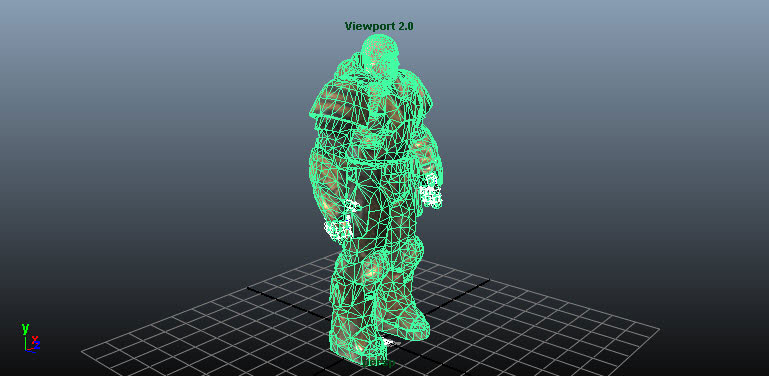
- ベースメッシュのために使用したエクスポート手順と同じ手順に従います。(上記 メッシュのエクスポート のセクションで解説されています)。
LOD のインポート
静的メッシュの LOD は、コンテンツ ブラウザにおいてベースメッシュとともにインポートすることができます。あるいは、AnimSet エディタを通じて個別にインポートすることができます。 LOD をともなったメッシュ- コンテンツ ブラウザの中で ボタンをクリックします。開いているファイル ブラウザで、インポートすべき FBX ファイルに進み、それを選択します。 注意 : ドロップダウン リストから を選択することによって、不要なファイルを除去しなければならない場合があります。
- [ Import ] ( インポート ) ダイアログボックスから適切な設定値を選択します。 Import LODs (LOD のインポート) を有効にします。 注意 : LOD をインポートする際、インポートされるメッシュの名前はデフォルトの 命名規則 に従います。全設定値の詳細については、 FBX インポート ダイアログ のセクションを参照してください。
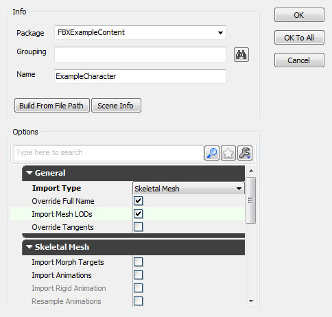
- ボタンをクリックして、メッシュと LOD をインポートします。プロセスが成功すると、その結果として得られたメッシュ、マテリアル (複数も)、テクスチャ (複数も) がコンテンツ ブラウザ内に表示されます。
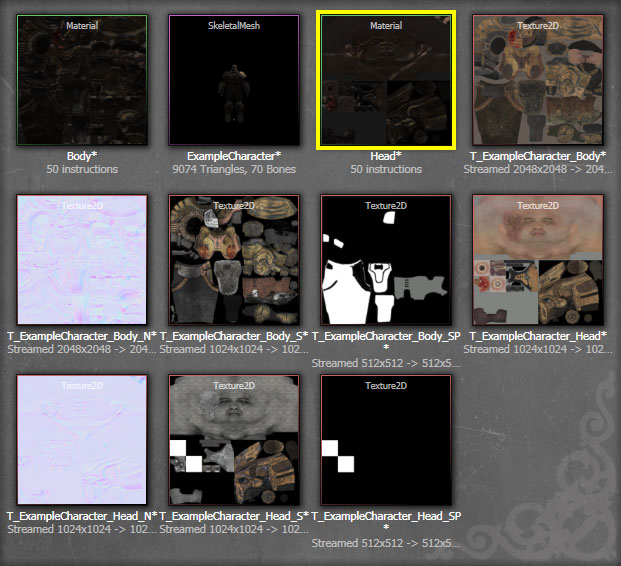
AnimSet エディタにおいて、インポートされたメッシュを表示することによって、ツールバー内の
 ボタンで LOD を循環表示させることができます。
ボタンで LOD を循環表示させることができます。
- AnimSet エディタでベースメッシュを開きます。そのためには、コンテンツ ブラウザ内でベースメッシュをダブルクリックするか、右クリックして Edit Using AnimSet Editor (AnimSet エディタを使用して編集する) を選択します。
- AnimSet エディタの [ File ] メニューから、 Import Mesh LOD (メッシュ LOD のインポート) を選択します。
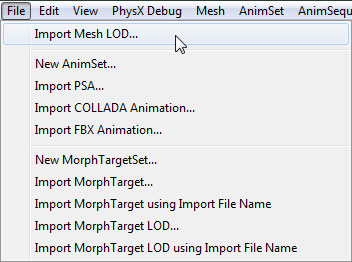
- ファイル ブラウザで、LOD メッシュを含んでいる FBX ファイルに進み、選択します。 注意 : ファイルを見るには、ファイル形式を
 にセットしなければならない場合があります。
にセットしなければならない場合があります。

- [ Import LOD ] (LOD のインポート) ダイアログボックスにおいて、ドロップダウン メニューからインポートしたいメッシュの LOD レベルを選択します。さらに、
 をクリックして LOD メッシュをインポートします。
をクリックして LOD メッシュをインポートします。

- インポートのプロセスが成功した場合は通知があり、インポートされた LOD のためのボタンが ツールバー ボタン内で有効化されます。

- インポートしたい LOD メッシュそれぞれについてプロセスを繰り返します。
- すべての LOD メッシュがインポートされると、ツールバー内の ボタンを使用して LOD メッシュをプレビューすることができるようになります。
「Unreal」エディタから FBX をエクスポートする
- コンテンツ ブラウザ内で、エクスポートする SkeletalMesh (骨格メッシュ) を選択します。

- SkeletalMesh (骨格メッシュ) を右クリックし、[ Export to File ] (ファイルにエクスポートする) を選択します。

- ファイル ブラウザが表示されるので、そこから、エクスポートするファイルの場所と名前を選択します。 注意 : FBX File (*.FBX) がファイルタイプとして選ばれるようにします。